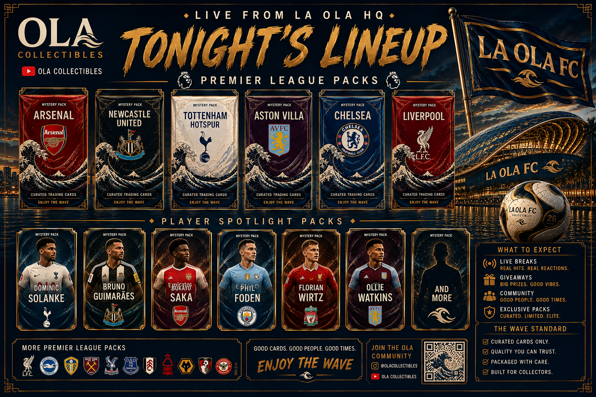
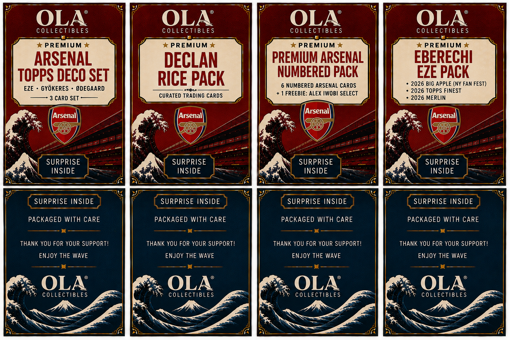

FEATURE
Tonight's Lineup
The collectible language becomes the bridge between Arsenal, football culture and La Ola — but Arsenal stays its own world.
Enter the collection →ARSENAL · NORTH LONDON
The real football identity. Matchdays, shirts, chants, players, eras, memories and the emotional current that existed before the fantasy club ever did. Some things become projects because you decide to make them. Arsenal was already there.

ARSENAL × OLA COLLECTIBLES THE VISUAL LANGUAGE →CURRENT ARSENAL
Arsenal gets the same flagship treatment as La Ola FC: one strong visual world, one current football layer, and everything else organized around culture, memory and identity.

FEATURE
The collectible language becomes the bridge between Arsenal, football culture and La Ola — but Arsenal stays its own world.
Enter the collection →MATCHDAY LIVE
Loading next Arsenal match…
Loading Arsenal snapshot…
THE CLUB WORLD
Like La Ola FC, this page is not just a dashboard. It is the front door to the Arsenal world: the rituals, imagery, sound, players and eras that make the club personal.
RITUAL
It starts hours before kickoff: lineups, texts, predictions, that first little spike of nerves. Then ninety minutes decides whether the rest of the day feels lighter or heavier. Matchday is the game — and everything around it.
KITS
Every shirt eventually stops being “this season’s shirt” and becomes a timestamp: the sponsor, the collar, the strange third kit, the one tied forever to a huge match.
CHANTS + SOUND
Football has its own language. Songs that only need the first three words. Players whose names become rhythms. Crowd noise that tells you what is happening before the camera does.
CHANTS · SONGS · NOISEPLAYERS + ERAS
Some players define a season. Some define an era. Some only need one goal, one run, one celebration. This archive records who mattered here — not who a history book says should matter.
PLAYERS · ERAS · MOMENTSCLUB DNA
“The real club. The emotional source.”
Some things become projects because you decide to make them. Some things were already part of you before you started documenting them.
Arsenal belongs in the second category. The point of this page is not to explain the club to the internet. It is to preserve the version of Arsenal that lives here — the matches remembered, the shirts kept, the players loved, the jokes repeated, the losses that lingered and the wins that changed the mood of an entire week.
OLA COLLECTIBLES · ARSENAL
The card work is no longer the whole page. It is the Arsenal world's visual artifact system — premium packs, player studies, posters and collectible football memories.
THE DESIGN LANGUAGE
Deep red lacquer, antique gold borders, cream editorial panels, Japanese-wave geometry and stadium-at-night drama. This is the Arsenal art language inside OLA HQ.
ARSENAL × LA OLA FC
Arsenal is the identity. La Ola FC is the fantasy club. FPL Draft is the competition. The crossover exists only where the football naturally connects them.
GUNNERS IN LA OLA FC
Reading current Draft ownership…
PERSONAL ARCHIVE
Every recovered Arsenal thing should have a home here: art, photos, shirts, chants, memes, favorite players, seasons, journals and memories.
Arsenal through the OLA lens: match posters, player studies, typography, waves, North London and visual experiments. Not official graphics — our Arsenal world.
Watch parties, trips, matchday life and the accidental pictures that become more valuable because they prove where football was happening in real life.
Home, away, third, classics and weird ones. Kits are season markers: fabric history you can still pull out of a closet.
The songs, names, crowd noise and tiny phrases that turn football from something watched into something lived.
The squads, managers, title races, collapses, recoveries and specific teams that permanently belong to a particular time in life.
Not a match report archive. The moments worth keeping: what happened, why it mattered and what it felt like from this side of the screen.
THE CLUB REMAINS
La Ola can change. Fantasy seasons reset. Players move. Shirts become old shirts. Arsenal is the fixed point — and this world gets better every time another real piece of that history finds its way home.